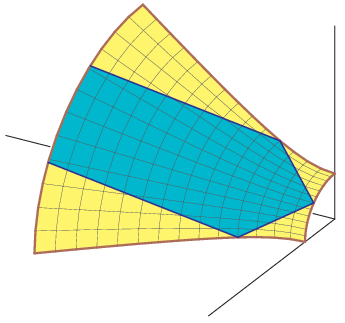
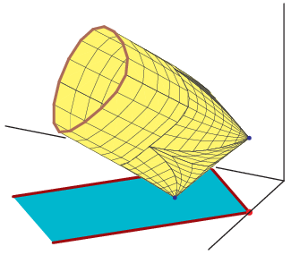
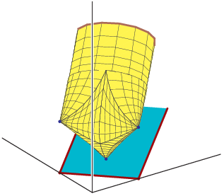

Describing AmoebasMounir Nisse and Frank Sottile. |
| An amoeba is the image of a subvariety of an algebraic torus under the logarithmic moment map. We consider some qualitative aspects of amoebas, establishing some results and posing problems for further study. These problems include determining the dimension of an amoeba, describing an amoeba as a semi-algebraic set, and identifying varieties whose amoebas are a finite intersection of amoebas of hypersurfaces. We show that an amoeba that is not of full dimension is not such a finite intersection if its variety is nondegenerate and |
|


 Algebraic Amoeba of a Real Line and Two Views of the Algebraic Amoeba of a Complex Line |